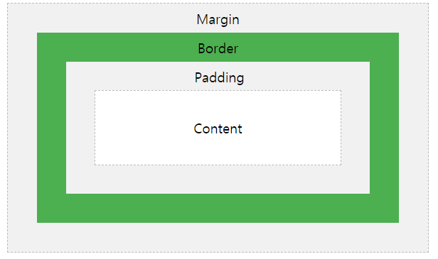

안녕하세요
오늘은 아이스아메리카노를 먹으면서 공부합니다.
오늘의 목표는 박스모델에 대해서 정리하고 지금까지 공부했던 내용을 바탕으로 중복을 줄여보는 연습을 해보려고합니다.
topic. 7. 박스 모델
h1 태그와 같이 화면 전체의 부피를 사용하는 태그가 있고 a태그와 같이 자신의 콘텐트의 크기만큼 부피를 사용하는 태그가 있다.
이것은 일반적인 쓰임을 통해 지정이 되고 변경할 수 있다.
화면 전체를 쓰는 태그는 block level element라고 하고 자신의 콘텐트의 크기만큼을 쓰는 태그는 inline element라고 한다.
이것을 자유자재로 쓸 수 있는 방법은 display: inline or block라고 쓰면 기본값인 element를 변화시킬 수 있다! 이 외에도 다양한 value가 있다. inline-block
tip) display: none은 웹페이지에서 안보이게 하는 property와 value이다.
box.html을 보면 h1태그와 a태그가 같은 property와 value가 같지만 중복이 많이 생긴다 이때 태그를 콤마로 같이 써넣어 중복을 줄일 수 있다.
또한 border의 속성이 겹치는데 이때 겹치는 속성에 value값을 다르게 작성하면 중복을 줄일 수 있다.
이 때 세미콜론은 value를 전부 쓰고 마지막 value에 붙인다.
컨텐트와 테두리 사이의 여백을 조정하고싶다라고 하면 padding 태그를 사용한다.
테두리와 테두리 사이의 여백을 조정하고싶다라고 하면 margin 태그를 사용한다.
박스의 자체의 크기를 조정하고 싶으면 width와 height태그를 사용한다.

모르면 검색한번 해보는거 중요하다.
마우스 오른쪽 클릭 -> 검사를 들어가면 나의 html 태그가 어떤 css의 효과를 받고있는지와, 어느정도의 박스크기를 설명하는지 알려줍니다.
Cascading Style
HTML
오늘 topic 8까지 할려고했는데 못했네요... 오늘 반성하고 내일 열심히!!! 그래도 복무하면서 열심히 공부한다는 내게